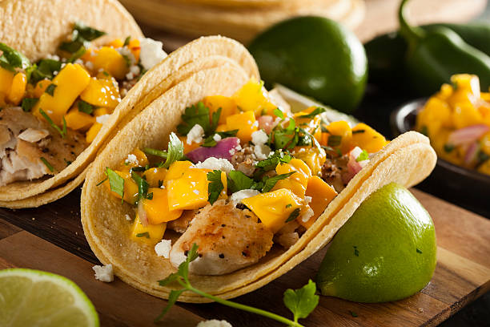
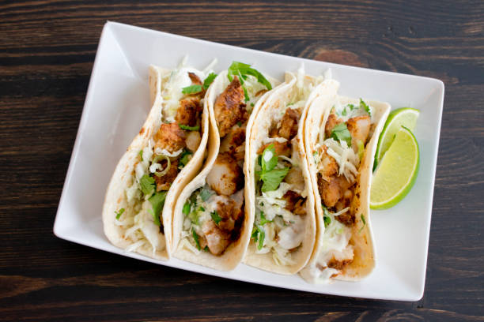
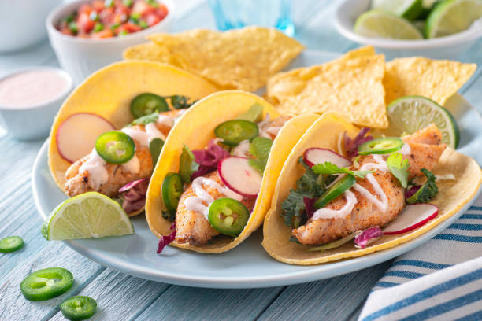

.
.
.
.
Preheat the oven to 400 degrees F (200 degrees C).
Arrange fish sticks in a single layer on a baking sheet, and bake 20 minutes in the preheated oven, or until crisp and golden brown. Remove from heat and cut into thirds.
Heat vegetable oil in a skillet over medium-high heat. Fry tortillas until soft. Drain on paper towels.
Fill heated tortillas with fish stick portions, cabbage, tartar sauce, and salsa to serve.
  